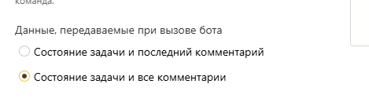

Администрирование бота "Маршрутизатор"
Краткое описание
Бот нужен для того, чтобы:
Организовывать бесконечные циклы доработок.
Менять маршрут задачи в случае визы Против
Готовить таблицы для листов согласований, если клиента не устраивает стандартный
Бот может быть один на организацию и управляется правилами, которые получает в настройках.
Бот должен стоять на этапе для того, чтобы отреагировать на все согласования (если на этом этапе требуется его работа, конечно). Бот всегда ждёт остальных согласующих и ставит свою визу последним. Также рекомендуется добавлять его в наблюдатели, чтобы нельзя было перезапросить согласование на раннем этапе без его ведома.
Если нужно фиксировать комментарии в таблицы - убедитесь, что при вызове боту передаются все комментарии задачи

Бот рассматривает визу Прочитано как положительное решение.
Алгоритм бота
При получении вызова бот проверяет задачу на соответствие правилам, которые переданы ему в настройках. В соответствии с ними он перезапрашивает этапы, завершает задачи и заполняет поля, связанные с прекращением задачи (подробнее в настройках). Если он стоит на этапе и только от него зависит дальнейшее продвижение, бот согласует этап. Если бот также находится в наблюдателях и он поставил какую-то визу, он потом возвращает себя в наблюдатели самостоятельно. Бот использует первое правило, которое удовлетворяет условиям.
После того, как правила будут отработаны и все операции с задачей выполнены (то есть новые значения полей отправлены и после обновления маршрута самой системой), он приступает к заполнению таблиц согласований. Для этого для всех согласующих на этапах, которое есть на момент обработки, он устанавливает дату их согласования по комментариям задачи. Если речь идёт о роли, то он также устанавливает пользователя, который поставил согласование от неё. В соответствии с правилами он заполняет таблицы. Информацию о кодах заполняемых колонок бот накапливает по мере прохода по правилам. То есть, если в первом правиле указаны все коды колонок для таблицы, далее можно их не указывать. Если же для одной таблицы указаны разные коды для одной колонки в двух правилах, то будет использоваться код, указанный во первом правиле. Обновление таблиц происходит без уведомлений пользователей и других ботов. Обратите внимание, что эта таблица не может дополняться пользователями, так как бот удаляет все строки, которые не соответствуют указанным в маршруте пользователям.
Настройки бота
Общие правила (все кроме rules относятся к заполнению таблиц согласований):
choices - необязательно, словарь наименований, которые будут подставляться вместо наименований виз. По умолчанию используется словарь:
let base_rules = {
"approved": "Утверждено",
"acknowledged": "Просмотрено",
"rejected": "Против",
"waiting": "Ожидает решения"
}timezone - необязательно, число (может быть отрицательным), часовой пояс, в котором бот будет записывать даты согласований. По умолчанию, +3
initials - необязательно, логический параметр, указывает будет ли бот записывать инициалы согласующего (значение true) или полное имя. По умолчанию true
include_waiting - необязательно, логический параметр, указывает будет ли бот записывать в таблицы пользователей, которые ещё не поставили согласование. По умолчанию true
Настройки бота передаются ему в параметре rules - своде правил, каждый из которых является объектом со следующими атрибутами:
form_id - обязательно, номер формы, по которой должна быть создана задача, чтобы правило применялось
steps - обязательно, массив из номеров этапов, на которых отрабатывает правило. Нумерация этапов здесь и далее начинается с 1
revision_settings - необязательный параметр. Представляет из себя правило отправки на доработку. Объект, состоящий из следующих атрибутов:
field - необязательно, код поля типа Галочка, при нажатии на которое задача отправляется на доработку. По умолчанию используется код revision_checkmark. Если галочка нажата, бот выполняет все действия, связанные с доработкой и стирает галочку, чтобы её можно было нажать заново
comment - необязательно, код поля, в котором отправляющий на доработку может написать причину отправки на доработку. При возврате на доработку бот стирает значение этого поля, написав комментарий со значением из него.
set_field - необязательно, код поля типа Галочка, которое заполнит бот, если задача хотя бы раз по этому правилу отправлялась на доработку. Полезно, если по процессу задача должна возвращаться инициатору. Тогда добавляете этап, который исполняется только если эта галочка нажата. А для повторной доработки указываете этот этап в следующем параметре
return_steps - необязательный параметр, массив из номеров этапов, на котором будут перезапрошены все согласования
stop_settings - необязательный параметр. Представляет из себя правило, которое является реакцией на отрицательное решение на этапе. Критерии отрицательного решения настраиваются в этом же параметре:
criteria - необязательный параметр, по умолчанию равен 100. Представляет из себя число. Если число положительное - это процент голосов, которые необходимы для отклонения. Отрицательное число - количество голосов, которые необходимы для отклонения. Примеры:
Чтобы отклонить, нужно чтобы все проголосовали Против. Тогда указываем 100
Для принятия решения нужно как минимум 75% голосов. Тогда для отклонения нам достаточно 26% голосов, это число и указываем
Нам достаточно одного Против, чтобы отклонить идею, то есть решение должно быть единогласным. Тогда указываем -1.
wait_for_everyone - необязательный параметр. По умолчанию бот не ждёт пока все проголосуют. Если он видит, что голосов сейчас уже хватает для того, чтобы сказать, что решение отрицательное, он совершит действия, связанные с этим. Поэтому если нужно дождаться всех, нужно проставить true.
veto - массив из пользователей, которые могут наложить вето. В таком случае, если они поставили Против, бот проигнорирует criteria и будет считать, что решение отрицательное. ВАЖНО!!! ЕСЛИ НА ЭТАПЕ СТОИТ РОЛЬ, ТО НУЖНО УКАЗЫВАТЬ ЕЁ ID, А НЕ ОДНОГО ИЗ ПОЛЬЗОВАТЕЛЕЙ ИЗ НЕЁ
field - необязательный параметр. Код поля типа Галочка или Выбор, которые нужно заполнить, если решение отрицательное. При перезапросе не затирается.
field_value - обязательный параметр, если у заполняемого поля тип Выбор. Нужно указать значение этого поля.
waiting_status - необязательный параметр, значение, которым заполняется поле типа Выбор, если мы кого-то ждём на этапе
close - необязательный параметр, по умолчанию false. Если поставить true, бот закроет задачу. Проконтролируйте, что у бота есть права на это
registration_settings - необязательный параметр, словарь, в котором хранятся правила заполнения информации о согласующих в таблице в задаче. Указываются параметры:
table_code - обязательно, указывается код поля типа Таблица, которую бот заполняет согласующими
user_code- обязательно. Код колонки типа Контакт, в которую заносится согласующий или роль (если согласования ещё не было). По ней бот устанавливает, какие строки удалять, а какие оставлять
step_code - обязательно. Код колонки типа Число, в которую заносится номер этапа. По ней бот устанавливает, какие строки удалять, а какие оставлять. Рекомендуется скрыть от пользователей
date_code - необязательно, код колонки, в которую заносится дата. Может быть полем типа Текст или Дата.
fio_code - необязательно, код колонки, в которую заносится ФИО согласующего или название роли (если согласование ещё ожидается). Поле типа Текст
position_code - необязательно, код колонки, в которую заносится должность согласующего. Поле типа Текст
choice_code - необязательно, код колонки, в которую заносится решение согласующего. Поле типа Текст
timezone - необязательно, число, дублирует основной параметр. Если нужно для конкретного правила использовать другой часовой пояс
initials- необязательно, логический параметр, дублирует основной параметр. Если нужно для конкретного правила использовать другие правило заполнения инициалов
include_waiting- необязательно, логический параметр, дублирует основной параметр. Если нужно для конкретного правила использовать другое правило учёта пользователей для ожидания.
choices - необязательно, словарь для виз, дублирует основной параметр. Если нужно для конкретного правила использовать другую формулировку для какой-то визы
Пример настроек
{
"choices": {
"approved": "Одобрено"
},
"include_waiting": false,
"rules": [
{
"form_id": 2306828,
"steps": [2],
"revision_settings": {
"comment": "revision_comment",
"set_field": "init_revision",
"return_steps": [1,2]
},
"stop_settings":{
"field": "Status",
"field_value": "Отказано руководителем",
"close": true
},
"registration_settings":{
"table_code": "super",
"step_code": "super_step",
"user_code": "super_user",
"choice_code": "super_decision"
}
},
{
"form_id": 2306828,
"steps": [4],
"stop_settings":{
"criteria": 60,
"field": "Status",
"waiting_status": "Голосование ЭС",
"field_value": "Отклонено ЭС",
"close": true
},
"registration_settings":{
"table_code": "ek",
"step_code": "ek_step",
"user_code": "ek_user",
"date_code": "ek_date",
"choice_code": "ek_decision"
}
},
{
"form_id": 2306828,
"steps": [6],
"revision_settings": {
"field": "ik_revision",
"comment": "ik_comment",
"return_steps": [5]
},
"stop_settings":{
"veto": [316392],
"waiting_status": "Голосование ИК",
"field": "Status",
"field_value": "Отклонено ИК"
},
"registration_settings":{
"table_code": "ik",
"step_code": "ik_step",
"user_code": "ik_user",
"fio_code": "ik_fio",
"position_code": "ik_position",
"date_code": "ik_date",
"choice_code": "ik_decision"
}
},
{
"form_id": 2306828,
"steps": [8],
"revision_settings": {
"field": "ik_revision",
"comment": "ik_comment",
"return_steps": [5, 6]
},
"stop_settings":{
"criteria": -1,
"field": "Status",
"field_value": "Отклонено экспертом УК",
"close": true
},
"registration_settings":{
"table_code": "expert",
"step_code": "expert_step",
"user_code": "expert_user",
"fio_code": "expert_fio",
"choice_code": "expert_decision",
"initials": false,
"include_waiting": true,
"choices": {
"approved": "Одобрено экспертом",
"rejected": "Отклонено экспертом"
}
}
}
]
}